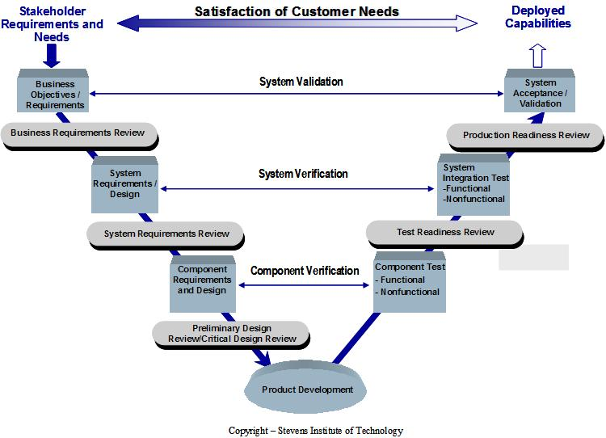

| Practice: Systems Engineering |
 |
|
| This practice can be used to enhance a UMF Delivery Process to provide a set of technical baselines that will enable
the project team to effectively define and control the project scope. The practice is used to reduce risk on
large, complex, risky, or technically-challenging projects. This practice is used for projects that have one or more of the following characteristics:
|
The Systems Engineering practice provides a set of technical baselines. Each baseline is built upon the previous one and provides further refinement to the previous baseline. The technical baselines start at the beginning of a project with the customer baseline and end at project completion with the production baseline. Throughout the project, the Systems Engineer must control changes to the technical baselines. The technical baselines include the requirements documentation and the design/architecture documentation. The change management process defined by the Project Manager (PM) for the project must be followed for all changes to the technical baselines. The figure below depicts a high-level overview of the Systems Engineering process. It shows how the process flows from the customer requirements or expectations to product development, and then how the developed product is verified and validated to produce a deployed set of functionality or capabilities.  The practitioner should integrate this model with a delivery process when a project is large, complex, or has need for a strong technical baseline. The Systems Engineering practice supports the SEI CMMI process and provides a strong technical baseline to reduce project risk and thus increase the probability of project success. |
| © Copyright IBM Corp. 1987, 2012 All Rights Reserved Property of IBM These materials are intended only for use as part of an IBM engagement |